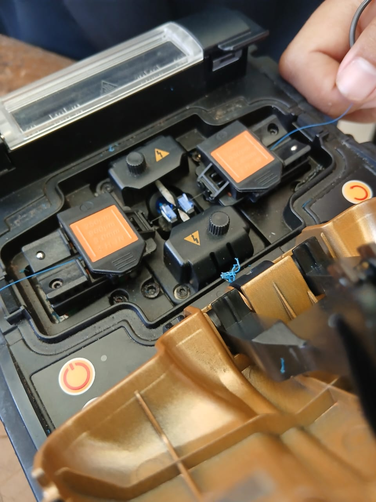

Penyambungan kabel Fiber Optik!
Alat dan bahan yang digunakan:
- Kabel Fiber Optik
- Fusion Splicer
- Cleaver
- Stripper
- Smufe
- Tang
- Miller
- Tisu
- Alkohol
- Konektor
- Senter VFL
Langkah-langkah penyambungan:
- Siapkan alat dan bahan

- pisahkan outer jacket kawat dengan outer jacket core menggunakan stripper

- Kemudian kupas outer jacket core dengan miller
- Setelah dikupas kemudian dikupas lagi menggunakan stripper agar bagian core terlihat
- Bersihkan core menggunakan tisu yang sudah dibasahi dengan alkohol
- Potong core menggunakan cleaver, dengan meletakkan core di cleaver kemudian sesuaikan di nomor 15

- Potong dengan cara mendorong boost
- Setelah dipotong letakkan kabel Fiber Optik di splicer, sesuaikan core diantara 2 paku. Jangan sampai melebihi atau kurang

- Lakukan hal yang sama pada kabel Fiber Optik lainnya
- Masukkan smufe disalah satu kabel Fiber Optik
- Tekan tombol power untuk menghidupkan splicer
- kemudian tekan tombol hijau untuk menyambung 2 kabel Fiber Optik
- Tunggu sampai terhubung di layar splicer
- Setelah tersambung keluarkan kabel dari kedua paku, sesuaikan smufe untuk menutupi core dari kedua kabel Fiber Optik yang sudah disambungkan
- Masukkan kabel yang sudah dilapisi dengan smufe ketempat pembakaran, kemudian tutup pengaman pembakaran

- Selama pembakaran tombol pembakaran akan berwarna merah otomatis. kita bisa mengeluarkannya setelah tombol tidak berwarna merah
- Setelah dikeluarkan dari pembakaran, kabel Fiber Optik sudah bisa digunakan
- Selanjutnya salah satu dari ujung kabel Fier Optik di kupas. Setelah cladding terlihat kupas lagi sampai core terlihat
- Bersihkan core dengan tisu yang sudah dibasahi alkohol
- Potong core menggunakan stripper, kemudian buka konektor dan masukkan core hingga ujung konektor
- Kunci konektor dengan mendorong bagain coklat konektor ke atas, pasang bagian biru konektor lagi sampai kencang
- Lepas penutup konektor, isi bagian tersebut di colok dengan leser senter (VFL)

- Hasil yang sempurna yaitu jika cahyanya tidak membias alias tidak menyebar